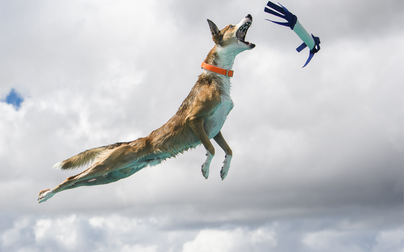

Many dogs enjoy different types of dog sports. As well as being good exercise, these sports often allow dogs to use their natural instincts, like chasing, sniffing, and tugging. For many sports, dogs need to be physically fit, but ultimately, the focus is just on you and your dog having fun!
These sports involve some level of competition, but the priority is always the safety and happiness of your dog. If you are interested in trying out a sport for your dog, you should consider what your dog naturally likes to do, how old your dog is, and what their level of fitness is. For example, if you have a senior dog who loves to sniff and gets excited about squirrels, barn hunt may be for them! If you have a younger, more physically fit dog who loves obedience training, then an agility course might be fun for them!
| Sport | Type of Dog | Where to Find |
|---|---|---|
| Agility | Dogs with good obedience training. | Salty Dogz Agility Club of Utah |
| Barn Hunt | Dogs that love to sniff and have a prey drive. | Desert Rats Barn Hunt Club of Northern Utah |
| Dock Diving | Dogs that are physically fit and love water. | DogMode in Salt Lake City |
| FastCat | Dogs that love to run and chase, and have a prey drive. | Utah Sighthounds Racing & Coursing Club |
| Flyball | Dogs that are physically fit, and like to run, jump, and tug. | Thunder Paws Flyball Team in Salt Lake Valley |